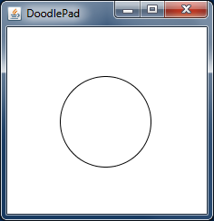

DoodlePad is an open source object oriented graphics library that makes it easy to write computer graphics programs in Java. It automatically sets up the Java graphics environment for the progammer, including graphic object management, rendering, double buffering and a diverse set of pixel-perfect, shape specific events and event handling. Because of these features, DoodlePad is ideal for introductory computing education as students are free to focus on developing core programming skills while working in the fun and engaging world of computer graphics. DoodlePad and this website are designed to help you get started quickly and to have a Java graphics program running in no time.
Below you'll find a complete DoodlePad program that creates a graphics window (a Pad object) and draws an oval object. It results in a window like that shown in the figure that follows. This simple program demonstrates how DoodlePad allows a programmer to focus on what they need for their program, such as the creation of an Oval object, and not on details such as creating JFrame and JPanel objects, using a Graphics2D object, etc.
See Getting Started to begin programming with DoodlePad or download now.
import doodlepad.*;
public class MyFirstOval {
public static void main(String[] args) {
Oval oval1 = new Oval();
}
}
